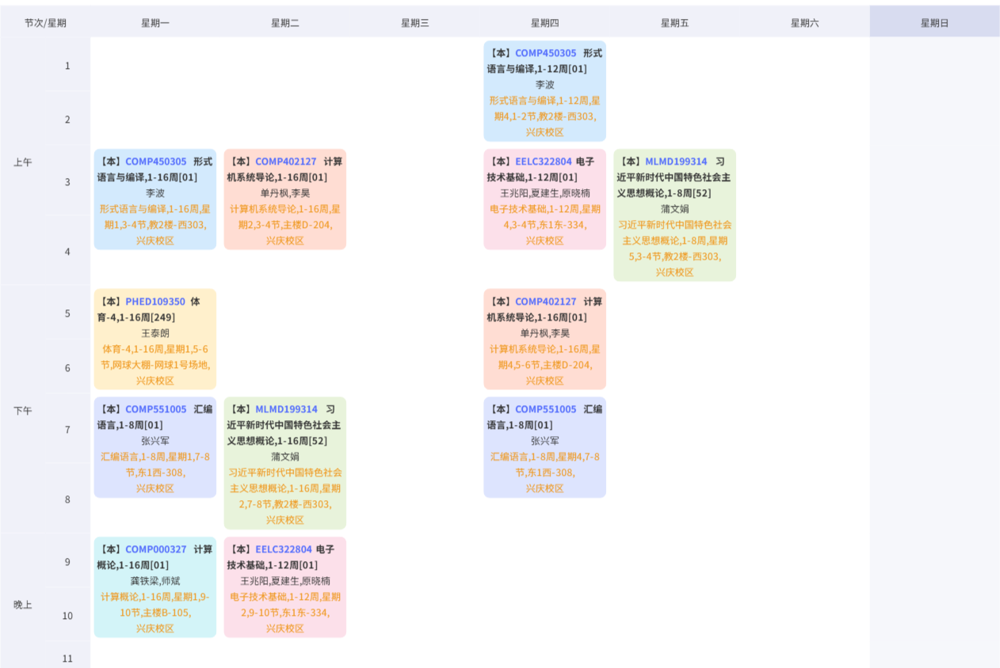

本周计划（与日更新）
| 序号 | 星期一 | 星期二 | 星期三 | 星期四 | 星期五 | 星期六 | 星期日 |
|---|---|---|---|---|---|---|---|
| 1 | 绘图各部分整合 | 形式语言与编译 | ICS-lab1 | ||||
| 2 | 形式语言与编译 | 计算机系统导论 | 计算概论作业 | 电子技术基础 | 习概 | ||
| 3 | 体育 | 绘图第三部分 | 计算概论作业 | 计算机系统导论 | ICS-lab1 | ||
| 4 | 汇编语言 | 习概、绘图第三部分 | 小组组会（本周无） | 汇编语言 | 论文复现 | ||
| 5 | 计算概论 | 电子技术基础 | 阅读论文 | 查看自修申请 | 论文复现 | 综工理论课 | |
| 晚上 | 绘图第四部分 | 阅读论文 | ICS-lab0 |
[!TIP]
周三晚上的计算概论作业部分主要是规划好作业进度，并完成一些很简单的部分
课表

常用网站
形式语言与编译
[!TIP]
x
汇编语言
[!TIP]
x
计算概论
- 阅读课上介绍的两篇文章，并总结。文章一;文章二
- 为什么说计算思维的核心是“构造”，而构造的任务是抽象与自动化？你可以用身边的例子举例说明什么是计算思维吗？
- 在gitcode开源代码平台注册一个账号，并通过代码仓库的fork和PR（Pull Request），实现代码的提交。 代码仓库链接
[!TIP] 所有的理论作业交思源学堂，程序作业交
gitcode
计算机系统导论
- 完成
lab0，即完成实验环境的配置 -
datalab在周四开始，要跟上节奏 - 找到英文原版教材
- 仔细浏览课程主页，以便以后能方便使用
[!TIP]
严防作弊！！
电子技术基础
[!TIP]
X
游戏设计
- 把上课时间标记好，了解课程进度
[!TIP]
科研任务
-
继续绘图
-
读第一篇论文并复现
-
上交这周的科研任务
其他杂项
-
成功部署一次
GitHub上的项目，写一篇经验贴 -
写一个扒取论文的脚本，并设计好数据库，可以试试前面寒假作业中学到的
-
整合以下上学期的德育资料，看看还有哪些缺少的
-
看看最近得到的几个比赛或者项目信息，看看有没有合适的
-
研究以下
obsidian该怎么用